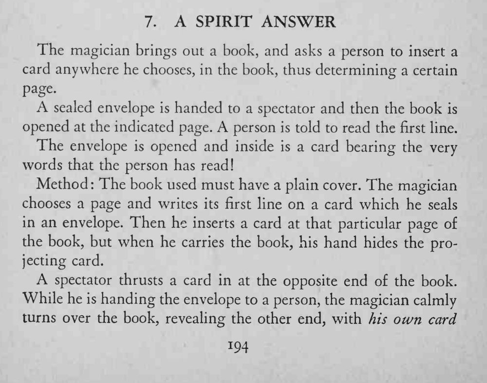
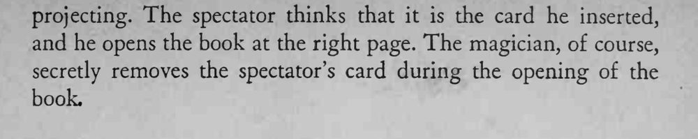

观众把卡片随便插进书里决定了一页，翻开后读出第一行；信封里的卡片上写的正是这一行话。
书要封面朴素、不能太厚，翻书时手掌始终遮住露角的卡片。


The magician brings out a book, and asks a person to insert a card anywhere he chooses, in the book, thus determining a certain page. sealed envelope is handed to a spectator and then the book is opened at the indicated page. A person is told to read the first line. The envelope is opened and inside is a card bearing the very words that the person has read! Method: The book used must have a plain cover. The magician chooses a page and writes its first line on a card which he seals in an envelope. Then he inserts a card at that particular page of the book, but when he carries the book, his hand hides the projecting card. spectator thrusts a card in at the opposite end of the book. While he is handing the envelope to a person, the magician calmly turns over the book, revealing the other end, with his own card and he opens the book at the right page. The magician, of course, secretly removes the spectator's card during the opening of the book.